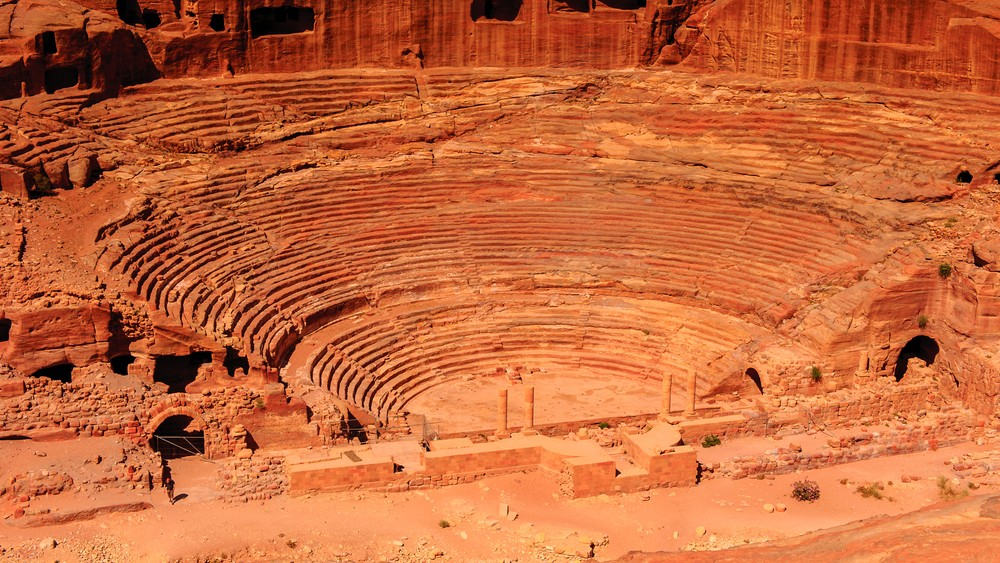

Marele Zid Chinezesc
Marele Zid Chinezesc (chineză: 万里长城/萬裡長城, Wànlĭ Chángchéng „zidul lung de 10.000 Li”; chineză 中国长城/中國長城, Zhōngguó Chángchéng „zidul lung chinezesc”) este o construcție strategică de mii de kilometri lungime, cu rol de apărare. Zidul a fost construit cu scopul de apărare a graniței imperiului chinez contra atacurilor popoarelor nomade din nordul Chinei. Este o construcție gigantică considerată după volum ca cea mai mare de pe glob, cu o lungime de 21.196,18 km.
Istoric
Prima porțiune a zidului a fost construită probabil în a doua jumătate a secolului V î.Hr, în timpul dezbinării Imperiului chinez (475-221 î.Hr.), cu scop de apărare împotriva nomazilor din nord.
În anul 214 î.Hr., împăratul Qin Shihung-di permite să se construiască prima parte a zidului de la fluviul Galben ca apărare față de poporul nomad Xiongnu (numiți în Europa huni). Spre deosebire de zidul construit mai devreme care se întinde și în văi, zidul acesta era construit numai pe crestele munților. Din lipsă de argilă s-a folosit la construcția zidului numai piatră așezată pe straturi. Din acele timpuri zidul a fost mereu reclădit, atingând în timpul dinastiei Ming lungimea maximă. În anul 1493 împăratul Hongzhi a început construcția zidului dinastiei Ming care servea ca apărare contra mongolilor și pentru o supraveghere mai bună a drumurilor comerciale, ca porțiunea centrală a drumului mătăsii, pe crestele munților începându-se o construcție deosebit de costisitoare.
Mortarul folosit era produs din piatră de calcar arsă amestecat cu amidonul din orez. La construcția interioară a zidului se folosea un amestec de argilă nisip și piatră cioplită. Grosimea zidului este foarte diferită, astfel de exemplu în regiunea Peking, zidul are o grosime între 4 și 8 m, la coama zidului 8, iar la bază 10 m grosime. La intervale de câteva sute de metri s-au construit turnuri de 12 m înălțime cu rolul de observare, transmitere de semnale și depozit de arme. Se apreciază ca ar fi existat cca. 25.000 de asemenea turnuri integrate în zid și 15.000 de turnuri pentru semnalizare care făceau legătura cu capitala situată lângă Kashgar. Codul de semnale era simplu, dacă se observa agresorul se făcea foc în turn.
Construcție gigantică a lumii antice, Marele Zid Chinezesc măsoară 21.196,18 de kilometri lungime, fiind și astăzi „cel mai lung zid de pe Terra”. Nu se știe cu exactitate care din formațiunile statale chineze a hotărât înconjurarea teritoriului său cu valuri de pământ și piatră. Pentru a-și proteja statul pe care îl unificase, primul împărat al Chinei, Qin (221-210 î.Hr.) poruncește să fie legate între ele fortificații clădite de predecesorii săi. Astfel va înainta atât spre est cât și spre vest, pe o lungime totală de circa 5.000 kilometri, realizând cel mai lung zid ce va deveni, ulterior, celebru. În timpul următoarei dinastii, Han (206 î.Hr.-220 d.Hr.), zidul a fost din nou prelungit spre est și spre vest până la o lungime de 21.196,18 kilometri. Suferind stricăciuni mari de-a lungul unui mileniu, Marele Zid Chinezesc a fost refăcut pe circa 6.400 kilometri în timpul dinastiei Ming (1368-1644), dinastie ce a fixat și capitala statului la Beijing (forma în care s-a păstrat până astăzi).
Șerpuind pe crestele munților și ale dealurilor, dar și prin văile adânci, zidul, prevăzut din loc în loc cu forturi cu aspect paralelipipedic și turnuri înalte de apărare, are o înălțime de 12 metri și o lățime de 6,5 metri. Pavat cu piatră, era folosit ca șosea strategică dar și ca drum comercial.
Lăsat în paragină începând cu secolul al XIX-lea, Marele Zid Chinezesc a fost luat sub protecție guvernamentală din 1952, fiind declarat monument istoric al Chinei. Cu toate astea, numai o mică porțiune din zid a fost reabilitată și accesibilă turiștilor.
Controverse
În anul 1754, anticarul britanic William Stukeley a menționat într-o scrisoare faptul că „Zidul lui Hadrian e întrecut doar de Marele Zid Chinezesc, putând fi văzut de pe lună”.[4] În 1895, Henry Norman, jurnalist englez, a citat același lucru într-un articol de ziar.[4] După anii 50' mitul a început să se răspândească, deși el a fost demontat de toate misiunile spațiale ce au ajuns pe Lună, echipajele spunând că Marele Zid nu este vizibil nici măcar de pe orbită.
Curiozități:
- De-a lungul timpului, materialele de construcție folosite au fost piatră și pământ însă cel mai interesant material folosit a fost amidonul de orez, încorporat în rețeta mortarului. Studiile recente au indicat că amilopectina orezului (substanța care îl face lipicios) explică rezistența peretelui de-a lungul timpului.
- Construcția Zidului a durat peste 1800 de ani
- Construcția, întreținerea și supravegherea Marelui Zid au fost sarcini ale criminalilor condamnați în timpul dinastiei Qin.
- În ciuda tuturor eforturilor de a face din Marele Zid componenta principală a sistemului de apărare militară din China, mulți dintre inamicii țării au reușit să treacă peste această barieră. Invazia manchuriană (care a trecut prin zid) în secolul al XVII-lea a dus la căderea dinastiei Ming.
- La intervale de câteva sute de metri s-au construit turnuri de 12 m înălțime cu rolul de observare, transmitere de semnale și depozit de arme
- Marele Zid Chinezesc măsoară peste 21.196 de kilometri lungime, fiind considerat cel mai lung zid de pe Pamânt
- Mitul că Marele Zid ar fi vizibil de pe lună, a fost demontat chiar de către un astronaut chinez, Yang Liwei, scrie Nasa.gov. Teoria conform căreia zidul ar putea fi văzut de pe Lună datează de la cel puțin 1938. Acesta a fost repetat și a crescut până când astronauții au aterizat pe suprafața lunară. "Singurul lucru pe care îl puteți vedea de pe Lună este o sferă frumoasă, în mare parte albă, ceva albastru și pete de galben și din când în când ceva vegetație verde. Niciun obiect creat de om nu este vizibil la această scară."-Alan Bean
- Potrivit unui studiu arheologic efectuat de SACH şi fostul Birou de Stat pentru Topografie şi Cartografiere începând cu 2007, Marele Zid Chinezesc se întinde de-a lungul a 15 provincii, regiuni autonome şi municipalităţi ale ţării.
- Structurile Marelui Zid Chinezesc construite în timpul Dinastiei Ming (1368-1644), se întind peste 8.850 km.
- Începând cu 1644, când dinastia Ming a fost răsturnată, nu s-a mai lucrat la Marele Zid (în scopuri militare – unele zone au fost restaurate pentru turism)
- În anul 1952 a fost declarat monument istoric al Chinei.
- În decembrie 1987 Marele Zid a fost inclus pe lista patrimoniului mondial de către UNESCO.
- Marele Zid nu este o linie continuă: există ziduri laterale, ziduri circulare, ziduri paralele și secțiuni fără perete (munții înalți sau râurile formează în schimb o barieră).
- Cea mai populară legendă a Marelui Zid este despre Meng Jiangnv, al cărei soț a murit construind Zidul. Plânsul ei era atât de puternic încât o secțiune a Zidului s-a prăbușit, dezvăluind oasele soțului, astfel încât să le poată îngropa.
- Există o zicală în China: „Cel care nu a fost niciodată la Marele Zid nu este un om adevărat”, care provine dintr-o poezie a lui Mao Zedong.
- Marele Zid Chinez a fost supranumit cel mai lung cimitir de pe Pământ. Peste un milion de oameni au murit construind Zidul, arheologii găsind numeroase rămășițe umane îngropate sub anumite părți ale zidului.
- Filmul „Marele Zid”, cu Matt Damon in rolul principal, nu a fost filmat la Marele Zid Chinezesc.
- Bucăți întregi din Marele Zid au fost folosite pentru construcția de locuințe pentru civili între 1960 și 1970, când a avut loc Revoluția culturală din China.
- Cea mai cunoscută secțiune a Marelui Zid – Badaling – a fost vizitată de peste 300 de șefi de stat și VIP-uri din întreaga lume. Primul dintre ei a fost omul de stat sovietic Klim Voroshilov în 1957. Alte personalități care au vizitat Marele Zid Chinezesc au fost: Richard Nixon în 1972 (fost președinte SUA), Margaret Thatcher în 1977 (fost prim ministru al Marii Britanii), Constantin Dăscălescu în 1983 (fost prim ministru al României), Regina Elisabeta a II-a a Marii Britanii și Irlandei de Nord în 1986, Vladimir Putin în 2002 (Președintele Rusiei), Michael Jordan în 2004 (basketbalist).
- Peste 10 milioane de oameni vizitează Marele Zid Chinezesc în fiecare an.
- Începând din 1999, se organizeaza Maratonul Marelui Zid, un eveniment la care se înscriu anual peste 2500 de alergători din peste 60 de țări.
- 22. Numele chinezesc al Marelui Zid Chinezesc este "Changcheng".
Petra
Petra (greacă πέτρα (petra), însemnând „piatră”; arabă البتراء, Al-Batrāʾ) este un fost oraş antic, situat în Iordania. Este unul din cele mai celebre situri arheologice din lume, datorită templelor săpate direct în stâncă, cel mai cunoscut fiind "Trezoreria" ("Al Khazneh"), în stil grecesc, cu o înălţime de 42 m, unde s-a turnat şi partea finală a filmului Indiana Jones şi ultima cruciadă.
În 1985 Petra a fost inclusă în lista UNESCO a locurilor din patrimoniul mondial. Este şi una din Cele 7 noi minuni ale lumii.

Acest miracol al lumii se află la 240 km sud de capitala Amman și 120 km nord de staţiunea turistică de la Marea Roşie, Aqaba. Este fără îndoială, cea mai valoroasă comoară și cea mai mare atracție turistică a Iordaniei și este vizitată de turiști din întreaga lume. Nu se ştie cu exactitate când a fost construit Petra (denumit şi oraşul de stâncă), dar orașul a început să prospere în secolul I î.Hr., când s-a îmbogățit prin comerțul cu tămâie, smirnă și mirodenii. Mai târziu a fost anexat Imperiului Roman și a continuat să prospere până când un cutremur mare din 363 d. Hr. a distrus o mare parte a orașului.
Cutremurul a condus, în cele din urmă, la căderea orașului, care în cele din urmă, a fost abandonat, acoperind mare parte din istoria oraşului în mâl şi nisip, ceea ce sporeşte misterul şi famecul locului. Tocmai de aceea Petra este cunoscută în lumea largă ca fiind “city of mysteries”.
Până la mijlocul secolului al VII-lea, Petra pare să fi fost în mare parte pustie, cu excepția locuinţelor beduine din zonă. În 1812, un explorator elvețian numit Johannes Burckhardt a pornit să “redescopere” Petra; el s-a îmbrăcat în arab și l-a convins pe ghidul beduin să-l ducă în orașul pierdut. După aceasta, Petra a devenit din ce în ce mai cunoscut în Occident ca un oraș antic fascinant și frumos și a început să atragă vizitatori și continuă să o facă astăzi. Petra este, de asemenea, cunoscut ca orașul roșu, un nume care provine de la culoarea minunată a stâncii din care au fost sculptate multe din structurile orașului.
Atracţiile din Petra
Faţada templului numit “Trezoreria”
Este cea mai spectaculoasă fațadă din Petra. Iar drumul în sine, de la intrarea în Petra, până la acestă faţadă, printre formaţiunile stâncoase, pare desprins dintr-o poveste. Pereţii înalţi de piatră de toate culorile şi stâncile uriaşe, gata parcă să se prăbuşească la cea mai mică adiere de vânt, îţi taie răsuflarea. Şi după ce ai parcurs acest drum şerpuit, coborând mai mult de o oră pe jos printre stâncile maiestuoase, simţi cum parcă se înalţă cortina şi în faţă ţi se arată impresionanta faţadă, Trezoreria.
Are o înălțime de aproape 40 de metri și este construită cu elemente corintice, frize, figuri și multe altele din perioada antică. Trezoreria este încoronată de o urnă funerară, care, conform legendei locale, ascunde o comoară a faraonului. Deși originea sa este încă un mister, Trezoreria a fost construită probabil în secolul I î.Hr. Cu toate acestea, în realitate, urna a reprezentat un memorial pentru regalitate. Trezoreria cuprinde două etaje cu o lățime de 25 m și o înălțime de 39 m. Scopul Trezoreriei este neclar: unii arheologi credeau că este un templu, în timp ce alții credeau că este un loc pentru a stoca documente, o arhivă. Cu toate acestea, cea mai recentă excavare de aici, a scos la iveală un cimitir sub Trezorerie.
Amfiteatrul
Sculptat în partea de sus a muntelui, amfiteatrul din Petra este compus din trei rânduri de scaune separate de pasaje. Șapte scări se ridică în sala de audiență și pot găzdui 4000 de spectatori. Monumentul a fost sculptat în munți, în timpul domniei regelui Areta IV, iar romanii au reconstruit zidul din spate.
Barajul
Odinioară, acest baraj a fost construit pentru a-și proteja oraşul Petra împotriva inundațiilor care veneau în timpul ploilor sezoniere din munți și dealuri. Barajul a protejat Petra redirecționând apele de inundație într-un tunel, care mai târziu era intitulat “Tunelul închis”.
Canalul Siq
Este un canal de stâncă, fiind odinioară intrarea principală ce ducea spre oraşul Petra. Canalul măsoară 160 de metri lungime, cu o lățime de 3 până la 12 metri și atinge o înălțime de până la 80 de metri. Pe ambele maluri ale canalului Siq, există alte canale pentru a extrage apă de la Wadi Musa (Valea lui Moise), din afara orașului până la interior. Din dreapta, este evident că apa curgea prin țevi de ceramică, dar canalul stâng este sculptat din stâncă și acoperit cu panouri de piatră. Totodată, canalul de stâncă Siq este decorat cu diverse sculpturi, reprezentând mai ales zei. Se crede că statuile zeilor și sculpturile lor erau situate foarte aproape și chiar adiacente canalelor datorită credinței că apa era sacră.
Bab Al Siq (în arabă: poarta de acces)
Aici vei vedea trei blocuri masive, monumente pătrate sculptate din stâncă, apoi mormântul Obeliscului. Deasupra mormântului sunt patru piramide, precum și o nișă cu o statuie în basorelief. Mai jos este Triclinium, fostă sală de banchete.
Strada fațadelor
Este un nume dat rândului de morminte monumentale (mormântul lui Anesho – fost ministru al Reginei Nabatiyeh Shaqilh, care a condus între 70 și 76 d.Hr), sculptate în fața falezei de sud a Trezoreriei. Pe ambele părți, există o serie de interfețe decorate cu pietre funerare; unele dintre aceste interfețe au fost distruse de factori naturali.
Statuia lui Iisus Hristos
Cristo Redentor (Cristos Mântuitorul) este un monument în Rio de Janeiro (Brazilia), amplasat la sud de oraș, pe muntele Corcovado (700 m), în pădurea Tijuca. Monumentul a fost planificat cu ocazia aniversării a 100 de ani de la declararea independenței Braziliei. Schițele proiectului au fost întocmite de inginerul Heitor Silva Costa. Din motive financiare, numai după zece ani a început construcția lui.
Cu sprijinul Franței și Vaticanului s-a reușit realizarea proiectului și sfințirea statuii la data de 12 octombrie 1931. Edificiul, reprezentativ pentru Art Deco, are o înălțime de 30 metri, împreună cu soclul 38 de metri. Soclul ocupă o suprafață de 100 m2. Lățimea statuii, la nivelul brațelor, este de 28 metri, iar masa sa este de 1.145 de tone, masa aproximativă a capului este de 30 de tone, iar cea a fiecărei mâini de 8 tone. Capul măsoară 3,75 m, fiecare mână 3,20 m, lărgimea tunicii este de 8,50 m. Anvergura între mâini este de 28 de metri. În soclu se află o capelă cu hramul Nossa Senhora Aparecida, unde pot intra 150 de persoane și unde sunt celebrate căsătorii și botezuri. Mulajul (modelul) din ghips, precum și sculptura a fost efectuată de sculptorul francez Paul Landowski.
Prin dimensiunile sale, acest monument este una dintre cele mai mari statui ale lui Isus Cristos din lume. Doar statuia asemănătoare din orașul bolivian Cochabamba de 40,44 m dintre care 34,20 pentru personaj), statuia lui Cristos Rege din Świebodzin în Polonia (de 52,5 m / 33 m) și statuia lui Cristos din Vung Tàu în Vietnam (de 36 m / 32 m) sunt mai mari.
În prezent există în Brazilia și Portugalia mai multe copii ale statuii Cristos Mântuitorul din Rio de Janeiro.
Devenind celebru în Franța ca portretist, sculptorul român Gheorghe Leonida a fost inclus de către Paul Landowski în echipa care a început să lucreze la statuia gigantică de la Rio de Janeiro în 1922, fiind însărcinat să realizeze capul statuii Mântuitorului. Materialul de construcție este compus din beton armat, acoperit cu un strat de mozaic. Monumentul este folosit de biserica catolică la diferite aniversări ca loc de pelerinaj.
Machu Picchu
Machu Picchu este un oraș-templu incaș din secolul al XV-lea d.Hr., situat pe teritoriul regiunii actuale Cusco din Peru. Ruinele au fost redescoperite în 1911 de către arheologul Hiram Bingham, fiind unele dintre cele mai frumoase și enigmatice locuri străvechi din lume. În timp ce incașii foloseau sigur vârful muntelui (2761,5 m înălțime), ridicând sute de structuri de piatră începând cu anii 1400, legendele și miturile indicau faptul că Machu Picchu (însemnând "vechiul pisc" în limba Quechua) era adorat ca un loc sacru din cele mai vechi timpuri.
În anul 1983, UNESCO a desemnat Machu Picchu drept sit al patrimoniului mondial, descriindu-l ca "o capodoperă absolută de arhitectură și un testimoniu unic al civilizației incașe".
Pentru vorbitorii de spaniolă, primul "c" din Picchu e tăcut. În limba spaniolă, numele e pronunțat "maciu piciu" sau "maciu pikciu", pe când în limba quechua, (Machu Pikchu) se zice "maciu pikciu". În quechua, machu înseamnă "vechi" sau "bătrân", în timp ce pikchu înseamnă ba "bucată de coca mestecată", ba "piramidă, masiv ascuțit pe mai multe fețe; con". Așadar, numele sitului arheologic peruvian e câteodată interpretat "muntele vechi".
Descriere
Invizibil de dedesubt și complet limitat natural, înconjurat de terase agricole suficiente pentru a hrăni populația, și irigat de izvoare naturale, Machu Picchu pare să fi fost folosit de incași ca un oraș ceremonial secret. 610 metri deasupra, gălăgiosul râu Urubamba, norul înfășoară ruinele palatelor, băilor, templelor, hambarelor și a în jur de 150 de case, toate într-o remarcabilă stare de conservare. Aceste structuri, săpate în granitul din vârful muntelui sunt minuni atât arhitecturale cât și estetice. Multe dintre cărămizile cântărind 50 de tone sau chiar mai mult sunt atât de precis sculptate și unite cu atâta exactitate, încât îmbinările fără mortar nu permit nici măcar unei lame de cuțit să intre printre ele. Se știu puține lucruri despre utilizările sociale sau religioase ale orașului în vremurile incașilor. Scheletele a 10 femei și ale unui bărbat duc la presupunerea că acest sit ar fi putut fi un sanctuar pentru pregătirea preoteselor și/sau a mireselor nobilimii incașe. Oricum, examinarea ulterioară a oaselor a dezvăluit un număr egal de oase masculine, ceea ce indică faptul că Machu Picchu nu era exclusiv un templu pentru femei.
Patru secole au fost necesare pentru descoperirea unei fantastice fortărețe ascunse printre piscurile de 4000 de metri ale anzilor peruvieni. Nu i se cunoaște adevăratul nume, ce destinație avea și de ce a fost părăsită de băstinași în secolul XVI, fără a fi atacată de conchistadori. A scăpat neobservată de europeni până în secolul al XX-lea, când a primit și numele de Machu Picchu.
În secolul al XII-lea, enigmatica populație ce-și spunea Inca (Fii Soarelui) cucerea un vast teritoriu în nordul și vestul Americii de Sud, venind de undeva din zona meridională a continentului - nu se știe nici acum cu precizie de unde. Deși nu erau la fel de războinici și necruțători ca aztecii, incașii au cucerit nu mai puțin de 500 de civilizații amerindiene.
Nu s-au impus prin cultură (nu cunoșteau nici o scriere) căci aceștia transmiteau mesaje printr-un sistem de noduri și lungimi ale sforilor (ce nu este încă cunoscut), ci printr-o temeinică, chiar spartană organizare social-legislativă. Dar, mai presus de toate, aveau "obsesia" construcțiilor de drumuri pavate și de cetăți-fortărețe (inclusiv în junglă) menite să reziste veșnic în fața oricărui inamic. Capitala incașilor, Cuzco, era - arhitectural - comparabilă cu Roma cezarilor. Dar la numai 130 de kilometri de Cuzco, printre crestele andine, se află cetatea Machu Picchu.
Găsită abia în 1911, această citadelă a fost concepută ca un labirint citadin inexpugnabil. La peste 4000 de metri, lemnul era o raritate și totul a fost durat în piatră: terase, fotificații, palate regale, locuințe simple, bazine de acumulare a apei de ploaie, cărămizi, piețe și un sofisticat sistem de parcele agricole pentru cultura principală, porumbul. Totul se încadrează într-un plan urbanistic aparent "întortocheat", menit să deruteze eventualii invadatori. Este un unicat arhitectural impresionant și abia fotografiile făcute din avion i-au pus în evidență toate însușirile.
De fapt, ceea ce îi frapează cel mai mult pe cercetătorii istoriei amerindienilor este incredibila coincidență dintre opera mitică a lui Dedal ("inginerul" care a construit Labirintul de încarcerare al Minotaurului, sau, în altă variantă, palatul-labirint al regelui cretan Minos din Knossos). Labirintul Machu Pichu reflectă la rându-i simbolul vieții pline de meandre și în care drumul nu duce niciodată înapoi, ci mereu înainte, spre moarte. Inspirat din spiralele scoicilor (așa cum afirma poetul grec Theodorides), Labirintul - fie el amerindian, grec sau egiptean (cel al reginei Hawara din Krokodilopolis, de exemplu) - are deci conotația luptei cu timpul, el este adevăratul prizonier.
Și încă o enigmă: rețelele de drumuri făcute de cei care nu au cunoscut roata! 16.000 de km de drumuri pavate (a doua, ca lungime, după rețeaua romană de 90 de mii de km), inclusiv poduri suspendate în zonele mlăștinoase și nisipoase! De ce acest efort de tăiere de "autostrăzi" în coastele Anzilor, dacă incașii nu au avut vehicule, necunoscând roata? Nu lipseau borne indicatoare din 7 în 7 km și locuri de odihnă din 20 în 20 de km. Ideea utilizării drept piste de aterizare-decolare a fost avansată de foarte mulți cercetători, dar nu există dovezi credibile... nu încă... Nici un drum special amenajat nu ducea către Machu Picchu. Această enclavă (probabil a preoților, putând adăposti doar 500 de persoane) există parcă în afara timpului și spațiului, ascunzând mistere încă de nepătruns.
În inima unui lanț de munți acoperiți de un dens covor vegetal, Machu Picchu domină de mai bine de cinci veacuri îngusta și adânca vale a râului Urubamba.Acest cadru natural excepțional a făcut din cetatea incașă situl cel mai spectaculos din vechiul Peru. Înălțat pe la 1450 de suveranul incaș Pachacuti, Machu Picchu a fost în chip brutal abandonat de locuitorii săi în 1572, apoi uitat. A fost redescoperit în 1911 de istoricul Hiram Bingham, ale cărui teorii asupra sitului s-au bucurat multă vreme de autoritate. Machu Picchu numără cam 200 de clădiri, cel mai adesea în formă de patrulater, care nu au, în general, decât un singur etaj și nici o despărțitură interioară. Construcțiile cele mai marcante sunt Torreon, sau observatorul astronomic în formă de semicerc, folosit pentru determinarea datelor importante ale calendarului și Intihuatana, sau cadranul solar. Micul oraș poate găzdui între 500 și 1.000 de persoane, cifră modestă dacă o comparăm cu cei 200.000 de locuitori pe care îi număra, fără îndoială, pe atunci Cuzco, capitala.
Un oraș într-o natură îmblânzită
Sub conducerea arhitecților și șefilor de șantier în serviciul statului incaș, lucrătorii din cariere, cioplitorii în piatră și zidarii profesioniști construiesc noul oraș. Ei sunt secondați de muncitorii salahori recrutați dintre țăranii supuși corvoadei, munca forțată în serviciul statului. Pe versantul de est din Machu Picchu ("Vechiul Vârf"), muncitorii fac enorme lucrări pentru a adapta orașul la mediul natural. Ei ridică ziduri de susținere și amenajează multiple terase în cele două sectoare, agricol și urban, pe care le are orașul. Mai multe incinte cu ziduri înalte apără orașul. În zona agricolă, muncitorii instalează în plus canalizări pentru irigație și transportă pe terase cantități enorme de pământ necesare culturilor. În climatul tropical, muntele, transformat în grădină, răspunde nevoilor alimentare ale populației. Deasupra teraselor agricole constructorii incași ridică sectorul urban.
Mari constructori
Pentru a construi orașul, supușii împăratului Pachacuti s-au aprovizionat cu piatră din munții de granit de la Machu Picchu. Lucrătorii au desprins blocurile cu ajutorul unor pene de lemn umezite, așezate la intervale regulate după contururile blocului. Prin dilatare, lemnul făcea ca stânca să se crape. Pietrele au ajuns apoi pe șantier pe sănii urcate de-a lungul unor drumuri de pământ bătătorit, unde au fost trase pe trunchiuri de lemn cu coaja curățată, cu ajutorul frânghiilor. Pe șantier, cioplitorii în piatră au preluat ștafeta și le-au modelat cu unelte din bronz, dălți și percutoare de piatră dură. Extrem de riguroși, aceștia au ajustat perfect blocurile, dând astfel o mare soliditate zidurilor care au rezistat cutremurelor de pământ. Au obținut șlefuirea finală frecând blocul cu nisip. Această finisare a fost rezervată celor mai importante edificii din Machu Picchu, cum ar fi templele sau observatorul astronomic. Pentru a așeza materialele la locul potrivit, zidarii au folosit platforme de pământ pe care le-au înălțat în același timp cu zidul în construcție. Edificiile modeste au fost făcute din pietre grosolan cioplite, îmbinate într-un mod mai puțin regulat și legate între ele printr-un mortar gros făcut din argilă.
Un imperiu efemer
Suveranul Pachacuti, mare cuceritor, a întemeiat Imperiul incaș pe la 1440. Acesta a atins apogeul spre 1490. S-a întins, la vremea respectivă, din Columbia la Nord, până în centrul statului actual Chile la Sud și cuprindea Ecuador, Peru, Bolivia si Nord-Vestul Argentinei. Capitala era Cuzco, în Sudul Peru-ului. În 1532, spaniolii, sub conducerea conchistadorului Francisco Pizarro, au pus stăpanire peste acest imperiu care a durat mai puțin de 100 de ani. L-au trimis la moarte pe incașul Atahualpa și și-au însușit fabuloasele lui comori. În 1536, fratele vitreg al acestuia, Manco Capac, a preluat comanda răscoalei împotriva invadatorilor. După un zadarnic asediu al orașului Cuzco, el s-a retras în munții și pădurile de nepătruns ale regiunii Vilcambamba, capitala ultimului focar de rezistență. "Imperiul Vilcambamba" și-a găsit sfârșitul prin invazia armatei spaniole, în 1572 și executarea ultimului suveran, Tupac Amaru. Machu Picchu, care făcea parte din regatul Vilcambamba, a fost cucerit, iar locuitorii săi l-au abandonat la aceeași dată, în mod misterios.
Chichén Itzá
Chichén Itzá (din limba mayașă yucatecă: Chi'ch'èen Ìitsha',[1]; pronunție spaniolă: /tʃiːˈtʃɛn iːˈtsɑː/; tradus „La gura fântânii Itzá”) este un uriaș sit arheologic pre-columbian construit de civilizația Maya și aflat în partea central-nordică a peninsulei Yucatán, în statul Yucatán, Mexic.
Chichén Itzá a fost un centru regional al câmpiilor mayașe din nord din perioada clasică târzie până în cea clasică terminală și spre începutul perioadei postclasice. Situl prezintă o multitudine de stiluri arhitecturale, de la ceea ce se numește stilul „mexicanizat” și cu influențe din stilurile văzute în centrul Mexicului și până la stilul Puuc din câmpiile nordice. Prezența stilurilor central-mexicane a fost considerată un semn al migrațiilor directe a populațiilor din centrul Mexicului sau a unor cuceriri a acestora, dar interpretările contemporane văd prezența acestor stiluri non-mayașe mai mult ca un rezultat al schimburilor culturale.
Ruinele Chichén Itzá sunt proprietate a guvernului federal mexican, iar situl este administrat de Instituto Nacional de Antropología e Historia (Institutul Național Mexican de Antropologie și Istorie, INAH). Pământul de sub monumente, însă, este în proprietatea privată a familiei Barbachano.
Colosseum
Colosseumul este un monument turistic aflat in centrul Romei vizitat de foarte mulți turiști din toată lumea. El este probabil cea mai impresionantă clădire-ruină a Imperiului Roman. Colosseumul era cea mai mare construcție a vremurilor sale și astăzi este cel mai mare amfiteatru antic care poate fi vizitat in Italia. Colosseumul este situat la est de Forumul Roman. Construcția a început sub conducerea împăratului Vespasian în anul 72 d. Hr. și a fost finalizată în anul 80 d.Hr. sub conducerea succesorului său și moștenitorul Titus. Alte modificări au fost făcute în timpul domniei lui Domitian (81-96). Acești trei împărați sunt cunoscuți sub numele de dinastia Flaviană, iar amfiteatrul a fost numit în limba latină pentru asocierea cu numele de familie (Flavius).
Colosseumul ar putea avea, este estimat, între 50.000 și 80.000 de spectatori având o audiență medie de aproximativ 65.000; a fost folosit pentru concursuri cu gladiatori și spectacole publice, cum ar fi bătălii maritime pentru o scurtă perioadă de timp, când hipogeumul a fost în curând completat cu mecanisme de susținere a celorlalte activități, vânători de animale, execuții, reînnoiri ale unor bătălii celebre și drame bazate pe mitologia clasică. Clădirea a încetat să fie folosită pentru divertisment în epoca medievală timpurie. Mai târziu a fost refolosită în astfel de scopuri, cum ar fi locuințe, ateliere, cartiere pentru o ordine religioasă, o cetate, o carieră și un altar creștin.
Deși a fost ruinat parțial din cauza pagubelor provocate de cutremure și hoți de piatră, Colosseum este încă un simbol iconic al Romei Imperiale și este listat ca una dintre Cele șapte minuni ale lumii. Este una dintre cele mai populare atracții turistice ale Romei și are, de asemenea, legături cu Biserica Romano-Catolică, deoarece în fiecare Vinerea Mare Papa conduce o procesiune torchlită "Calea Crucii", care începe în zona din jurul Colosseumului.
Colosseumul este de asemenea prezentat pe versiunea italiană a monedei euro de cinci cenți.

Nume
Numele latin original al Colosseumului a fost Amphitheatrum Flavium. Construcția sa a fost realizată de împărații din dinastia Flaviană, în urma domniei lui Nero. În antichitate, romanii s-au referit la Colosseum prin numele neoficial Amphitheatrum Caesareum (cu Caesareum ca adjectiv legat de titlul de Cezar), dar acest nume poate să fi fost strict poetic, deoarece nu era exclusiv pentru Colosseum; Vespasian și Titus, constructorii Colosseumului, au construit de asemenea un amfiteatru cu același nume în Puteoli (Pozzuoli modern).
Destinația
Luptele de gladiatori:
Prizonierii din războaie erau puși să lupte între ei sau cu animale sălbatice. Spectatorii se delectau privind luptele dintre gladiatori si sclavi, uneori chiar si intre gladiatori si animale. Intre anii 80-400 e.n. se estimează că și-au pierdut viața în Colosseum în jur de 300.000 oameni, alături de peste 1 milion de animale.
Amfiteatrul Flavian sau Colosseumul
Împăratul Vespasian, fondatorul dinastiei Flaviane, a început construcția Colosseumului în anul 72 d.Hr.. Aceasta a fost încheiată în anul 80 d.Hr., la un an după moartea lui Vespasian.
Uriașul amfiteatru a fost construit în locul unui lac artificial, parte din marele parc construit de Nero în centrul Romei, care includea de asemenea și Domus Aurea cât și statuia Colossus. Această gigantică statuie a lui Nero, de 36 de metri înălțime, care îl prezenta pe împărat în chip de zeu al soarelui a dat numele actual al construcției - Colosseum. Statuia, amplasată lângă amfiteatru, a fost demolată ulterior. Nu numai statuia, dar și amfiteatrul ofereau o priveliște grandioasă. În formă de elipsă, cu axa mare de 186 m, axa mică de 150 m, avea un perimetru de 520 m si o înălțime de 55 m, oferind locuri pentru aproximativ 50.000 spectatori. Fundația pe care a fost construit avea 12 metri grosime.
Descrierea fizică
Exterior
Spre deosebire de amfiteatrele construite anterior între două dealuri, Colosseumul este o structură autonomă, în întregime construită. Planul său este eliptic, având 189 m lungime și 156 m lățime, aria sa fiind de 6 ha. Înălțimea zidului exterior este de 48 m. Perimetrul originar măsoară 545 m. Arena centrală este ovală, având 86 m lungime și 156 m lățime, înconjurată de un zid de 4,5 m înălțime, care se ridică până la nivelul primelor rânduri pentru spectatori.
Se estimează că zidul exterior era construit din 100.000 m³ de travertin, nu zidit cu mortar, ci fixat cu scoabe de fier. Ansamblul structurii a suferit pagube însemnate în decursul veacurilor, prin prăbușirea unor părți mari, în urma unor cutremure. S-a păstrat partea de nord a zidului de incintă. În secolul al XIX-lea au fost adăugate la extremitățile sale rampe de cărămidă pentru a-l consolida. Restul exteriorului actual al Colosseumului este de fapt zidul interior de la origine.
Partea păstrată a zidului exterior al fațadei monumentale se compune din trei niveluri de arcade suprapuse, având deasupra o platformă pe care se înalță un atic foarte înalt, prevăzut cu ferestre la intervale regulate. Arcadele sunt încadrate de semi-coloane dorice, ionice și corintice, în timp ce aticul este împodobit cu pilaștri corintici. Fiecare arc de la al doilea și al treilea etaj era ornat cu statui, probabil reprezentând divinități și alte personaje ale mitologiei greco-romane.
În jurul părții de sus a aticului se aflau 240 de catarge dispuse în corbel. Acestea susțineau un acoperiș mare, retractabil, cunoscut sub numele de velarium, care ferea spectatorii de arșița soarelui sau de ploaie. Era o pânză foarte mare, susținută de o plasă din frânghii, cu o gaură în mijloc. Acoperea două treimi din arenă, în pantă către centru, pentru a capta vântul și a-l dirija către spectatori. Velarium-ul era manevrat de marinari înrolați în acest scop la sediul marinei din Misenum și cazați la cazarma Castra Misenatium din apropierea Colosseumului.
Capacitatea enormă a Colosseumului necesita un sistem de acces și de evacuare eficient, pentru care arhitecții au conceput soluții similare celor care există la stadioanele moderne. La parter existau 80 de intrări, dintre care 76 erau destinate spectatorilor de rând. Fiecare intrare era numerotată, precum și fiecare scară. Nordul intrării principale era rezervat împăratului și apropiaților săi, pe când celelalte trei intrări axiale erau destinate elitei. Cele patru intrări axiale erau bogat decorate cu picturi și reliefuri din stuc, dintre care s-au păstrat unele fragmente. Un mare număr de intrări a dispărut prin prăbușirea zidului exterior, dar intrările XXIII la LIV mai există.
Spectatorii primeau bilete sub formă de bucăți de ceramică, pe care erau indicate prin numere secțiunea și rândul. Ajungeau la locurile lor prin mai multe vomitorii care dădeau în tribună. La sfârșitul jocurilor, sau în caz de urgență, evacuarea se putea face pe acolo în câteva minute.
Interior
În conformitate cu Calendarul Codex din 354, Colosseumul ar putea găzdui 87.000 de oameni, cu toate că estimările moderne pun cifra la aproximativ 50.000. Ei au fost așezați într-un aranjament pe niveluri, care reflecta natura rigidă stratificată a societății romane. Cutii speciale erau puse la nord și sud pentru împărat și Virginele Vestale, oferind cele mai bune unghiuri de vedere spre arenă.
Taj Mahal
Taj Mahaleste un monument în orașul Agra, India. A fost construit de împăratul Shah Jahan drept mausoleu pentru soția sa, Mumtaz Mahal. Clădirea a fost construită între 1630 și 1653.
În 1983 Taj Mahal a devenit parte din patrimoniul mondial UNESCO și rămâne și până astăzi printre cele mai vizitate și faimoase monumente din lume.

Descriere
Odinioară capitală a Imperiului Mogul (sec. XVI - XVIII), Agra se află la o oră și jumătate de mers cu trenul expres din New Delhi. Turiști din întreaga lume vizitează zona, dar nu pentru ruinele fortăreței construite de acest imperiu, ci pentru a vedea cu ochii lor Taj Mahal-ul. El este cel mai faimos monument din India, un templu magnific ce amintește lumii de bogata civilizație a unei țări care a fost treptat „înghițită” de industrializare. Taj Mahal-ul este cu adevărat cel mai bine păstrat monument mormânt din lume. Poetul englez Edwin Arnold îl descria ca fiind „nu un monument de arhitectură, ci dragostea unui împărat încrustată în piatră”. Este amplasat pe malul râului Yamuna, care servea ca mijloc de apărare a Fortăreței de la Agra, centru al Imperiului Mogul până la mutarea capitalei la Delhi în 1637.
Taj Mahal-ul a fost construit de al cincilea împărat mogul, Shah Jahan, în memoria celei de-a doua soții Mumtaz Mahal, prințesa persană musulmană. Împărăteasa a murit după nașterea celui de-al 14-lea copil, alături de soțul său, în timpul campaniei de zdrobire a rebeliunilor din Burhanpur. Moartea ei l-a afectat într-atât pe împărat încât părul i-a albit în numai câteva luni. Înainte de ultima suflare Mumtaz l-a rugat pe împărat patru lucruri: să-i construiască un mormânt, să se recăsătorească, sa-și iubească fiii și să-i viziteze mormântul la aniversare. Șahul a pierdut la decesul soției sale nu numai o consoartă, ci și un abil și inteligent sfetnic politic. Așa a jurat împăratul că va construi un edificiu funerar mareț și fără egal în lume.
Construcția Taj Mahal-ului a demarat în 1631 și a durat 22 de ani. Se spune că 20 de mii de oameni ar fi fost trimiși să muncească aici. Materialele erau aduse din întreaga Indie și din alte zone ale Asiei cu ajutorul unei "flote" ce numără 1000 de elefanți. Proiectat de arhitectul iranian Ustad Isa, Taj Mahal-ul a devenit "simbolul dragostei eterne". Clădirea "răsare" din peisajul roscat, așezată fiind pe o terasă de marmură albă care pune în evidență uriașul dom și cele patru minarete. Ansamblul închide în interior o grădină deosebit de frumoasă cu fântâni arteziene iar aleea principală, care pornește de la intrarea impozantă, este străjuită de arbori ornamentali.
Complexul mai cuprinde în afară de palatul propriu zis și o moschee. Aparent s-ar putea spune că sunt de fapt două moschei, însă una dintre clădiri este construită doar pentru simetrie, întregul complex fiind construit simetric. Înăuntrul domului se află sicriul împărătesei încrustat cu pietre prețioase. Atât de strălucitoare sunt interioarele incât au fost descrise ca fiind "proiectate de uriași și finisate de bijutieri". Singurul obiect asimetric din interiorul domului este sicriul împăratului care a fost construit alături de cel a reginei, 35 de ani mai târziu. Aceeași marmură este întâlnita și in camera mortuară, care prezintă sculpturi cu modele florale. Cu toate că este un mormânt, este adevărat - deosebit, plutește între cer și pământ cu formele lui simetrice perfecte și cu grădinile din jur reflectându-se în oglinda lacului împrejmuitor. În fața acestor minuni, turiștii rămân realmente gură cască.
Monument al dragostei trainice, Taj Mahal-ul are multe locuri ce se ascund ochilor vizitatorilor grăbiți. Baza rectangulară a clădirii este ea însăși un simbol. Poarta principală se aseamănă unui văl, pe care femeile Indiei îl poartă în noaptea nunții. Binecunoscutele imagini ale Taj-ului nu corespund întru totul legendei, poeziei și romantismului despre care Rabindranath Tagore obișnuia să spună că este "o lacrimă pe obrazul timpului". Culorile ansamblului se schimbă de la oră la oră și de la anotimp la anotimp așa incât Taj Mahal-ul și mormântul pe care îl găzduiește nu sunt niciodată la fel.
Ca o bijuterie strălucește Taj-ul în lumina lunii, captată de nenumăratele pietre prețioase încrustate în marmură. La răsărit întreg ansamblul pare roz, iar seara alb-galbui. Schimbarea culorilor se spune că este simbolul stării de spirit a femeilor. In vremurile de demult, existau aici uși de argint, iar în interior era amplasat un grilaj de aur masiv și o textura de perle direct pe lespedea funerară. Acestea au fost furate.
Clădirea este situată într-un decor natural și comunică cu exteriorul printr-o poartă înaltă și masivă, care este simbolul clar al intrării în paradis. Aceasta era fabricată din argint masiv și nituită cu cuie de argint, însa, din cauză că era foarte grea, s-a scufundat. A fost înlocuită cu una din alama, mult mai ușoară.
Potrivit legendei, Shah Jahan a intenționat să construiască pentru el însuși un monument similar, dar că acesta ar fi urmat să fie construit din marmură neagră pe malul celălalt al râului Yamuna.
Soarta, însă, i-a fost potrivnică: fiul său, Aurangzeb, s-a autoproclamat rege în anul 1658 și l-a menținut în captivitate în fortul de la Agra timp de nouă ani, sub formă de arest la domiciliu.
Tragedia survine aici: din interiorul fortului, fostul împarat mogul avea în departare privelistea și, totdată, perspectiva Taj Mahal-ului.
Deși iubirea puternică pentru soția călăuzitoare de vieți, nu a încetat nici chiar în momentul morții soțului iubit, totuși soarta le-a mai pregătit incă ceva celor doi: Taj Mahal-ul se schimbă din cauza poluării. Acesta își schimbă culoarea în galben, din cauza poluării, în pofida restricțiilor impuse activităților industriale și circulației rutiere. Pentru conservarea monumentului, Curtea Supremă indiană a ordonat în urmă cu zece ani închiderea sau mutarea turnătoriilor, cărămidăriilor și sticlăriilor din apropierea Taj Mahal-ului, situat la Agra, în nordul țării. Numai vehiculele electrice sunt autorizate în apropierea mormântului, iar calitatea aerului este măsurată regulat.
Cu toate acestea, depunerea de particule de materie în suspensie pe marmura albă a Taj Mahal-ului îi dă o tentă galbenă la suprafață, potrivit unui raport parlamentar ale cărui concluzii au fost publicate marți de ziarul Times of India. Comisia recomandă aplicarea unui tratament pe bază de argilă pe fațada monumentului, așa cum s-a mai făcut deja în trecut.